第六章近 似的数学
数学需要精确，可是，数学也不总是需要精确。不信，请看平方根表、对数表等常用表里，有几个是准确的函数值？
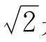
是无理数，可见在平方根表里查到的 ＝1.4142是近似值。不管用多少位的表，也只能是近似值。
＝1.4142是近似值。不管用多少位的表，也只能是近似值。
我们又知道sin45°＝cos45°＝
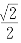
。可见，在正弦函数表里查到的sin45°＝0.7071，也只能是无理数的近似值。我们常用的表，还有正切函数表、常用对数表，在这些表里出现的数字，哪些是准确的函数值？哪些是有理数的近似值，哪些是无理数的近似值呢？
平方表很简单。表里列出了从1.00到9.99这些数的平方的4位有效数字。这900个数的平方都是有理数，但除了其中的90个数（1.00，1.10，1.20，…，9.90）的平方可以用4位数字准确表示外，别的都要用5～6位来表示。可见，表中数字90%是近似值——不过都是有理数的近似值。
通过类似的分析，我们可知立方表里只有22个数是准确值，其他的都是有理数的近似值。
用第二章里介绍过的知识，可以弄清楚，在平方根表里，除了30多个可以开尽的数外，其他的都是近似值——只不过此时都是无理数的近似值罢了。
立方根表可以类似地分析。
常用对数表也很容易分析。我们可以证明：
[命题12] 若x是有理数，则当且仅当x＝10n（n为整数）时，lgx才是有理数。
证明 设lgx＝y。按定义，10y＝x。记x＝
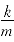
，m，k没有大于1的公约数。如果y是有理数，y＝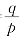
，p，q没有大于1的公约数。由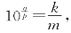
两端p次方，得
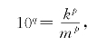
即
mp10q＝kp。
由于m，k没有大于1的公约数，由mp10q＝kp可知m＝1。于是kp＝10q，可见k一定是10的整数次幂。而
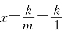
，故x是10的整数次幂。证毕。这样，在常用对数表里，除了lg10＝1.0000外，剩下的都是无理数的近似值了。
用类似的方法可以证明，在反对数表里，除了100＝1外，其他都是无理数的近似值。
不过，三角函数表可就没这么简单了。
通常，在三角函数表里，自变量的取值是用度、分、秒表示的。比如，在余弦表里可以查到cos31°6′＝0.8563。按照弧度与角度互化的方法，π弧度＝180°，有
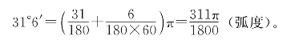
这样，如以弧度为单位，表上列出的角度便都是π的有理倍数。我们只要针对cos
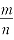
π这类函数值研究便可以了。设
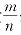
π＝φ，则cosnφ＝cosmπ＝±1。如果我们找到了cosnφ和cosφ之间的联系，就容易对cosφ进行分析了。你一定会想到，利用和角公式或和差化积，容易达到这个目的。首先，cos2φ＝2cos2φ－1，
cos3φ＝cos（2φ＋φ）＋cos（2φ－φ）－cosφ
＝2cos22φcosφ－cosφ
＝4cos3φ－3cosφ。
从这里容易想到：可以用递推的方法把cosnφ展成cosφ的多项式。具体一些，有
[命题13] 若n是正整数，则有恒等式
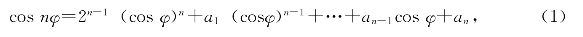
其中a1，a2，…，an都是整数。若n为奇数，则an＝0；n为偶数，则
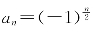
。证明 根据恒等式
cosnφ＋cos（n－2）φ＝2cos（n－1）φcosφ，
即得递推关系式
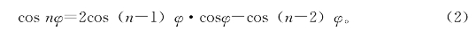
对n作数学归纳，设cos（n－1）φ，cos（n－2）φ都可以展成（1）的形式
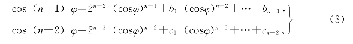
把（3）式代入（2）式，即可把cosnφ表示成（1）式的形式。由归纳法，（1）式成立。
（1）式既然是恒等式，那么它对φ的一切值成立。取
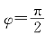
，则因cos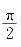
＝0，得an＝cos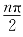
。所以当n为奇数时，an＝0；n为偶数时，an＝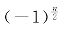
。证毕。应用命题13，我们立刻能判断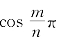
什么时候是无理数了。[命题14] 若n为奇数，
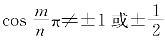
，则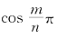
必为无理数。证明 在（1）式中，设
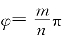
，得（注意，n为奇数，an＝0）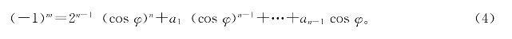
由（4）式可见cosφ≠0。设x＝co1sφ，代入（4）式，整理得
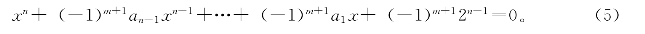
由（5）式可知，若x为有理数，x一定是整数（第二章，命题5）。又由（5）式可知
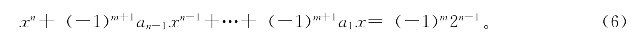
可见，x一定是（－1）m2n－1的约数，因而x＝±2k（0≤k≤n－1），即当n为奇数时
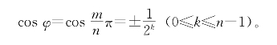
但是cos2φ＝cos
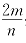
π也满足形如（4）的等式，故又有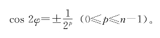
由cos2φ＝2cos2φ－1，得
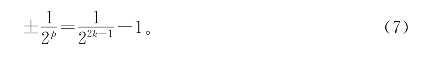
可见p，k都不能大于1，即cosφ＝±1或±
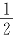
。证毕。把命题14灵活地运用一下，当n为偶数时，cos
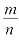
π何时为无理数的问题也解决了。[命题15] 若n，m为任意整数，n≠0，如果
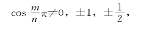
则
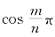
必为无理数。证明 设n＝2kp，p为奇数，我们对k作数学归纳法证明。当k＝0时，n为奇数，由命题14知道，如果
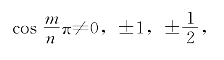
则
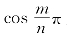
必为无理数。现在设
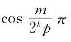
只能取到0，±1，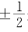
这些有理数值，否则必为无理数，再证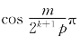
也是如此。设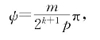
则由
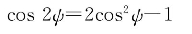
可知，如果cosψ是有理数，cos2ψ也是有理数。于是由归纳假设cos2ψ＝0，±1，
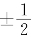
，故2cos2ψ－1＝0，或±1，或±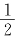
。可见，若cosψ是有理数，也只能是0（当cos2ψ＝－1）或±1（当cos2ψ＝1）或±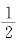
（当cos2ψ＝－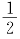
）。由数学归纳法，命题15得证。现在，我们已经知道，在余弦函数表里，除了cos0°＝1，cos90°＝0和cos
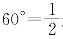
这3个值外，全部是无理数的近似值！正弦函数又如何呢？很显然有：
[命题16] 若
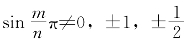
，则sin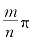
必为无理数，此处m，n是任意整数，n≠0。证明 根据
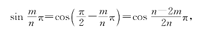
即由命题15推出本命题。
现在，我们乘胜前进，看看正切函数表里有哪些有理数表示的是准确值。
[命题17] 若m，n是任意整数，n≠0，则tan
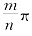
除了取0和±1这些值之外，只能取无理数值。证明 若
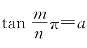
，a为有理数。记，则即
由此解出cos2，从而
要使cos2φ是有理数，由命题15，必须cos2φ＝0，或±1，或±。故cosφ只能取0，±1，。和这些值对应，sinφ只能取±1，0，。想要是有理数，只有cosφ＝±1，或。对应地，只有当tanφ＝0，±1时才可能是有理数。证毕。
这样，正切函数表里，只有tan0°＝0，tan45°＝1这两个准确值，别的都是无理数的近似值！
从以上分析可见，我们在计算中，用到的许多数据本来都应该是无理数，只不过为了方便，用有理数来近似地代替它们罢了。
练习题六
1.若a和b都是正的有理数。求证：只有当a，b是同一个有理数的整数幂时[例如]，logab才是有理数。
2.若a不是任何整系数代数方程式的根，b是正的有理数，a＞0，问在什么情形下logab才是有理数？
3.如果sinφ是有理数，那么sinnφ（n是整数）什么时候是有理数？
4.如果，那么sinφ＋cosφ为何值时是有理数？
5.如果，那么sinφ为何值时是整系数二次方程式kx2＋l＝0的根？